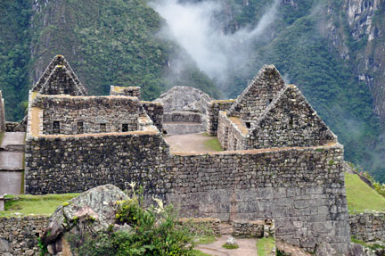

We are featuring two new trips for the coming year. The first is to the Galápagos. We will depart on February 5 and arrive in Lima, Peru. After arriving, we will stay at the Miraflores Park Hotel and enjoy the sights for two days in Lima. Next, we will fly to Guayaquil, Ecuador and stay overnight at the Hilton Colón before continuing on to Baltra Island in the Galápagos archipelago. After landing in Baltra, we will take a van to the dock and board the ship to begin our wonderful adventure. Our course will take us to several islands. The Galápagos archipelago consists of thirteen large islands and six small ones, along with over forty islets. The Galápagos is where Charles Darwin visited in 1835 and wrote his book "The Origin of Species." It is home to a variety of wildlife unlike anywhere else in the world. The expert local guides and naturalists will introduce you to the incredible Galápagos wildlife as you explore the islands and attend informative lectures each day.
The second trip we are featuring is to Peru. Our Peru trip will depart on May 5 and last for ten days. We will arrive in Lima, where we will check into the Miraflores Park Hotel. After two days in Lima we will depart for Cusco, where we will stay at the Hotel Monasterio for three days. The hotel's amenities include an option to have fresh oxygen pumped into your room, due to the high altitude of Cusco! While in Cusco we will visit the Cathedral, the ruins of Sacsayhuaman, and the Sacred Valley of the Incas. Machu Picchu is our next destination. We will travel by train from Ollanta, enjoying the scenery as we follow the Urubamba River to Machu Picchu. Our time at Machu Picchu will be simply magical. The meticulous preservation of the site helps you to envision the lives of those who lived here centuries ago.